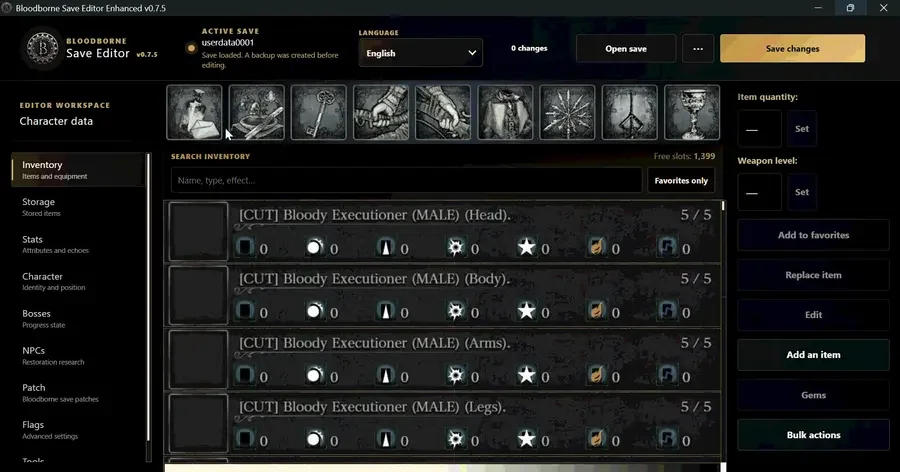
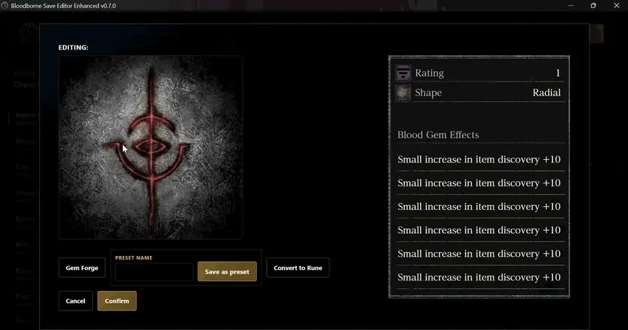
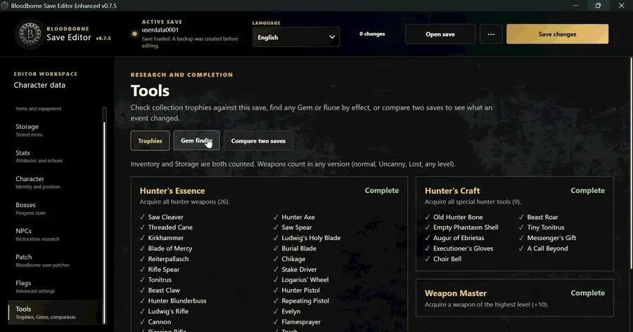

Inventaire et stockage
Ajouter des objets, armes, armures et gemmes. Recherche, favoris, compteur de cases libres, export et import en JSON ou CSV.
Un éditeur de sauvegardes pour le jeu Bloodborne : objets, armes, gemmes, personnage et boss. C'est mon projet personnel, publié sur GitHub avec des versions à télécharger.
Bloodborne enregistre la progression du personnage dans un fichier de sauvegarde. Pour le modifier, il faut d'abord le déchiffrer (le README du projet renvoie vers un guide). L'éditeur ouvre ce fichier déchiffré, affiche les données dans une interface lisible, puis enregistre les modifications.
Le projet est dérivé de l'éditeur de Noxde : je repars de son travail et je l'ai modernisé (interface, sécurité des sauvegardes, nouvelles fonctions). La licence GPL-3.0 est conservée et le crédit figure dans le README.
.bak et des copies
datées, mais la règle reste la même : avant toute modification, on garde une copie indépendante de sa sauvegarde.
Ajouter des objets, armes, armures et gemmes. Recherche, favoris, compteur de cases libres, export et import en JSON ou CSV.
Modifier la forme, la qualité et les six effets d'une gemme. Le Gem Forge propose des presets, un créateur d'effets personnalisés et une bibliothèque « Mes presets » exportable en JSON.
Attributs avec contrôle de cohérence, allumage et extinction des lampes, boss, flags et PNJ.
Assistant de trophées (Hunter's Essence, Hunter's Craft, Weapon Master), recherche de gemmes par effet et comparaison de deux sauvegardes.
Ouvrir, renvoyer, importer ou supprimer une sauvegarde directement sur la console (GoldHEN sur PS4, etaHEN sur PS5). La version présente sur la console est gardée en local avant tout remplacement.
Un fichier .bak à l'ouverture, des copies datées, annuler et rétablir, et des opérations groupées
testées sur une copie avant d'être appliquées. Interface disponible en 14 langues.
Les captures viennent du README du dépôt. Les sauvegardes affichées sont des exemples.



L'application de bureau combine deux parties, chacune avec son rôle :
src-tauri) : lit et écrit les données de la sauvegarde, vérifie les combinaisons et gère le pont FTP.Une sauvegarde est un fichier d'octets. Chaque information (argent, niveau, gemme…) se trouve à une position connue, et l'éditeur sait donc où lire et où écrire. Une gemme, par exemple, est un enregistrement de 40 octets : identifiant, source, type, forme et six effets.
src/ interface React (écrans, composants, traductions)
src-tauri/ cœur Rust (commandes, lecture et écriture des sauvegardes)
.github/ workflow de publication (GitHub Actions)npm test) pour la logique en JavaScript.npm run lint) et Prettier (npm run format) gardent le code lisible et uniforme.cargo test) et Clippy avec -D warnings : aucun avertissement n'est toléré.npm run validate vérifie les traductions, les fonctionnalités et les notes de version.main contient le marqueur
[release]. Il construit l'installateur Windows (NSIS et MSI) et l'AppImage Linux, les signe et publie la version.
latest.json signé pour proposer la mise à jour.Projet non officiel, non affilié à FromSoftware ni à Sony.